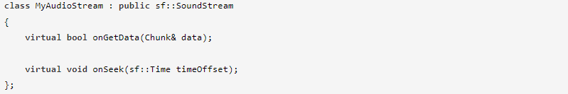
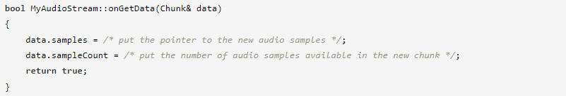
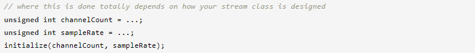
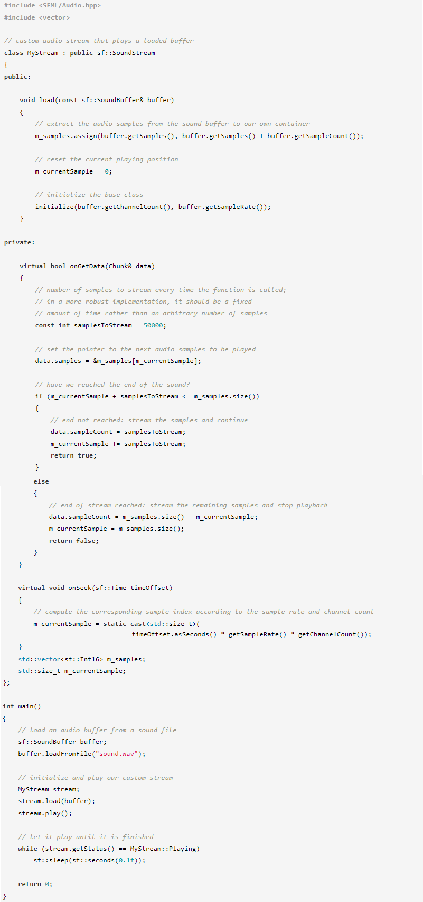

Аудиопоток похож на музыку (помните класс sf::Music?). Он имеет почти те же функции и ведет себя так же. Единственное отличие состоит в том, что аудиопоток не воспроизводит аудиофайл: вместо этого он воспроизводит пользовательский аудиоисточник, который вы предоставляете напрямую. Другими словами, определение собственного аудиопотока позволяет воспроизводить не только файл: звук, передаваемый по сети, музыку, сгенерированную вашей программой, аудиоформат, который не поддерживает SFML, и т. д.
По сути, класс sf::Music — это просто специализированный аудиопоток, который получает аудиосэмплы из файла.
Поскольку мы говорим о потоковой передаче, мы будем иметь дело с аудиоданными, которые не могут быть полностью загружены в память, а вместо этого будут загружаться небольшими фрагментами во время воспроизведения. Если ваш звук загружается полностью и помещается в память, то аудиопотоки вам не помогут: просто загрузите аудиоданные в sf::SoundBuffer и используйте для воспроизведения обычный sf::Sound.
Чтобы определить собственный аудиопоток, вам необходимо наследовать от абстрактного базового класса sf::SoundStream. В производном классе есть две виртуальные функции, которые нужно переопределить: onGetData и onSeek.
onGetData вызывается базовым классом всякий раз, когда у него заканчиваются аудиосэмплы и ему нужно их больше. Вы должны предоставить новые образцы аудио, заполнив аргумент данных:
Вы должны вернуть true, если все в порядке, или false, если воспроизведение должно быть остановлено либо из-за ошибки, либо из-за того, что больше нет аудиоданных для воспроизведения.
SFML создает внутреннюю копию аудиосэмплов, как только возвращается onGetData, поэтому вам не нужно сохранять исходные данные живыми, если вы этого не хотите.
Функция onSeek вызывается при вызове общедоступной функции setPlayingOffset. Его цель — изменить текущую позицию воспроизведения в исходных данных. Параметр представляет собой значение времени, представляющее новую позицию от начала звука (не от текущей позиции). Эту функцию иногда невозможно реализовать. В таких случаях оставьте его пустым и сообщите пользователям вашего класса, что изменение игровой позиции не поддерживается.
Теперь ваш класс почти готов к работе. Единственное, что сейчас нужно знать sf::SoundStream, — это количество каналов и частоту дискретизации вашего потока, чтобы он мог воспроизводиться должным образом. Чтобы сообщить базовому классу об этих параметрах, вы должны вызвать защищенную функцию инициализации, как только они станут известны в вашем классе потока (что наиболее вероятно, когда поток загружается/инициализируется).
Аудиопотоки всегда воспроизводятся в отдельном потоке, поэтому важно знать, что именно и где происходит.
onSeek вызывается непосредственно функцией setPlayingOffset, поэтому она всегда выполняется в вызывающем потоке. Однако функция onGetData будет вызываться неоднократно, пока воспроизводится поток, в отдельном потоке, созданном SFML. Если в вашем потоке используются данные, к которым можно получить одновременный доступ как в вызывающем, так и в воспроизводящем потоке, вы должны защитить их (например, с помощью мьютекса), чтобы избежать одновременного доступа, который может привести к неопределенному поведению — повреждению данных. играл, вылетает и т.
Если вы недостаточно знакомы с многопоточностью, вы можете обратиться к соответствующему руководству для получения дополнительной информации.
Теперь, когда вы определили свой собственный класс аудиопотока, давайте посмотрим, как его использовать. На самом деле все очень похоже на то, что показано в руководстве по sf::Music. Вы можете управлять воспроизведением с помощью функций play, pause, stop и setPlayingOffset. Вы также можете играть со свойствами звука, такими как громкость или высота тона. Вы можете обратиться к документации по API или к другим аудиоурокам для получения более подробной информации.
Вот очень простой пример пользовательского класса аудиопотока, который воспроизводит данные звукового буфера. Такой класс может показаться совершенно бесполезным, но суть здесь в том, чтобы сосредоточиться на том, как данные передаются классом, независимо от того, откуда они поступают.
